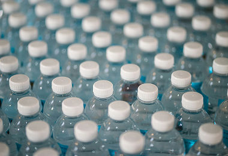
Joogivesi
Vett on vaja joomiseks, toidu valmistamiseks ja ravimite võtmiseks. Veevarustuse katkemisel ei pruugi kraanivett saada.
3 liitrit
inimese kohta päevas
Tutvu vajalike kriisivarudega, saa teada, milleks neid kasutatakse ja kui palju peaksid neid kodus hoida.
Igapäevaseks toimetulekuks vajalikud põhivarud.

Vett on vaja joomiseks, toidu valmistamiseks ja ravimite võtmiseks. Veevarustuse katkemisel ei pruugi kraanivett saada.
3 liitrit
inimese kohta päevas
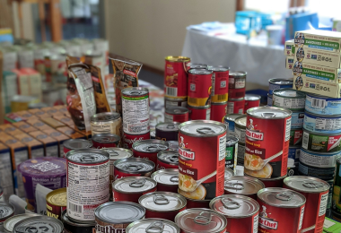
Toiduvaru aitab hakkama saada olukorras, kus poed on suletud või toidu ostmine ei ole võimalik.
7 päeva
toiduvaru inimese kohta
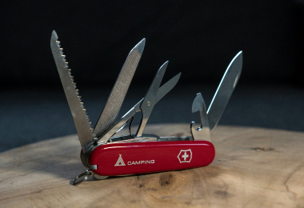
Käsitsi kasutatav konserviavaja võimaldab avada konservikarpe ka siis, kui elektrit ei ole.
1–2 tk
majapidamise kohta
Väiksemate vigastuste ja terviseprobleemide jaoks.
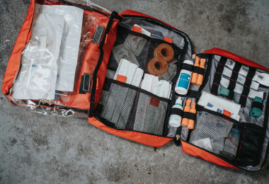
Komplekt sisaldab vahendeid väiksemate haavade, lõikehaavade ja vigastuste esmaabiks.
1 komplekt
majapidamise kohta
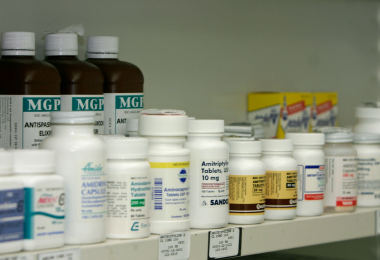
Igapäevaselt kasutatavad ravimid võivad olla hädavajalikud, kui apteeki ei ole võimalik külastada.
Võimalusel 7 päeva
vajalikke ravimeid
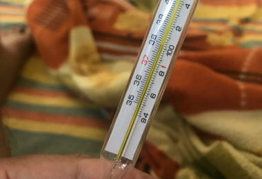
Termomeeter aitab kontrollida kehatemperatuuri ning hinnata palaviku olemasolu.
1 tk
majapidamise kohta
Valguse, info ja ühenduse säilitamiseks.
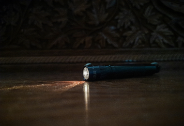
Taskulampi kasutatakse liikumiseks ja ümbruse valgustamiseks elektrikatkestuse ajal.
1–2 tk
majapidamise kohta
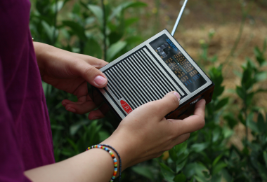
Raadio abil saad kuulata ametlikke teadaandeid ka siis, kui internet või mobiilside ei tööta.
1 tk
majapidamise kohta
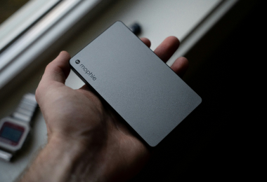
Akupank võimaldab laadida telefoni ja teisi väikeseid seadmeid, kui elektrit ei ole.
1–2 tk
majapidamise kohta
Olulise info ja isikut tõendavate dokumentide säilitamiseks.
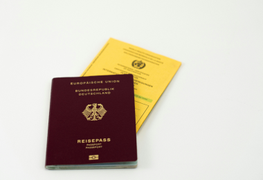
Koopiad aitavad olulist infot säilitada, kui originaaldokumendid kaovad või saavad kahjustada.
1 komplekt
pere kohta
Sularaha võib vaja minna siis, kui kaardimakse ja makseterminalid ei tööta.
Vastavalt vajadusele
väiksemates rahatähtedes
Paberile kirjutatud telefoninumbrid aitavad lähedastega ühendust võtta, kui telefonist info kättesaamine ei ole võimalik.
1 nimekiri
pere kohta
Puhtuse, tervise ja soojuse säilitamiseks.
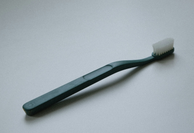
Seep, hambahari, hambapasta ja muud hügieenitarbed aitavad säilitada puhtust ja ennetada haigusi.
7 päeva varu
inimese kohta
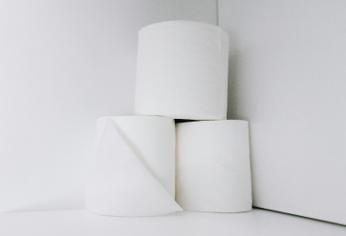
Neid kasutatakse isiklikuks hügieeniks ja pindade puhastamiseks.
7 päeva varu
pere vajaduste järgi
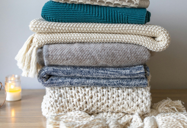
Soojad riided ja tekk aitavad hoida kehatemperatuuri, kui küte või elekter katkeb.
1 komplekt
inimese kohta